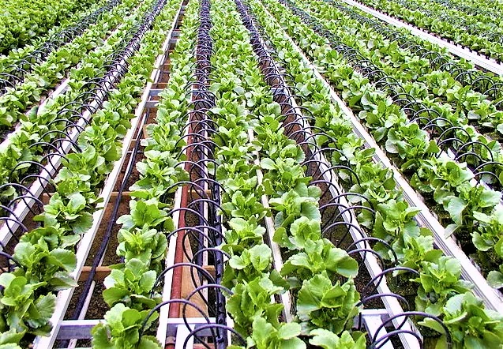
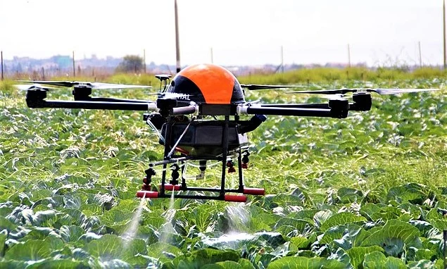
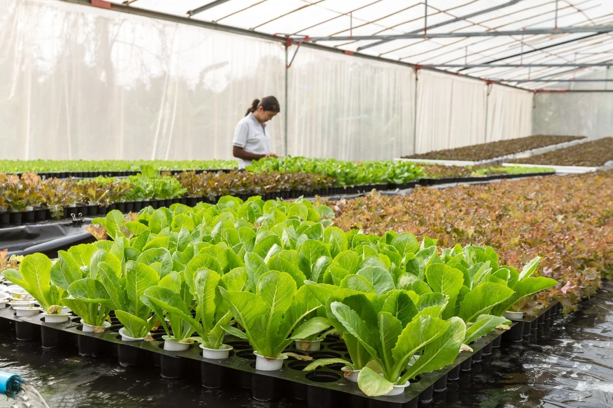
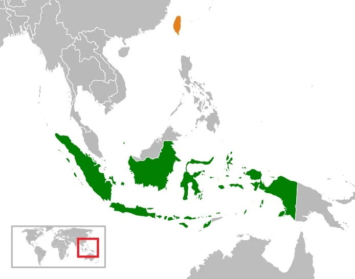

Sinar Mas
系所原始資料，保留官方發布語言。
以下資料保留官方發布原文；文件與外部連結亦維持原始語言。
International Students
Tzu Chi University of Science and Technology x Sinar Mas Agribusiness and Food
慈濟科技大學 (台灣) X 金光集團 (印尼)
Interviewee:
Professor Wen-Jui Lou, President of Tzu Chi University of Science and Technology (TCUST)
Reference:
https://www.smart-tbk.com/wp-content/uploads/2019/04/Siaran-Pers_Beasiswa-Internasional-Taiwan.pdf
1. TCUST promotes four major missions: Charity, Medical Care, Education, and Humanity. Can you elaborate more on this?
In 1966, Dharma Master Cheng Yen established the Tzu Chi Foundation in Hualien, on the east coast of Taiwan. With the spirit of self-discipline, diligence, frugality, and perseverance, Tzu Chi set out to help the poor and relieve suffering. The foundation’s mission started with Charity and over time extended into Medicine, Education, and Humanistic Culture. Tzu Chi originated in the remote Hualien area and expanded to five continents with chapters and offices in 57 countries. Tzu Chi provides aid to over 98 nations. Its volunteers selflessly contribute through a mindset of gratitude, expressing their sincerest care and support to each and every individual in need. Tzu Chi Foundation’s “Four Major Missions” consist of Charity, Medicine, Education, and Humanity.
1. Mission of Charity
“Educating the rich to help the poor; inspiring the poor to realize their riches.”
Tzu Chi pays attention not only to the effectiveness of its aid and assistance but also focuses on bringing out the good in everyone. By helping the poor, the rich get to feel the happiness of giving and find the true meaning of life. Likewise, the poor are motivated to harbor love abundantly and help out those less fortunate than themselves, so that they break away from perceived helplessness and despair. Consequently, more people become willing to help out others while enriching their spirits through contribution.
2. Mission of Medicine
“Patient-centered medical care that respects patients as teachers.”
Among the four suffering states of life, illness is the most painful. During her charity visits, Dharma Master Cheng Yen realized that many families became poor after encountering some major illness. Therefore, she founded the Tzu Chi Free Clinic for the Poor in 1972, which began Tzu Chi’s mission of Medicine. In 1986, the Hualien Tzu Chi General Hospital opened, and its guiding principles were “respect life” and “patient-centered”. Tzu Chi Taiwan’s medical network was completed by the openings of additional hospitals in Yuli, Guanshan, Dalin, Taipei, and Taichung. The medical staff, supported by large teams of volunteers, aim to perfect the “Four Entireties” of patient care: the entire treatment process, the patient’s entire body, the patient’s entire family, and the entire medical team. The goal is to ensure proper care of the body, mind, and soul of the patient. From city to countryside, from the mountain to the sea, Tzu Chi’s comprehensive medical network provides the people of Taiwan with top quality medical service that consists of the latest technology and the warm human touch.
3. Mission of Education
“Educating children to be moral and upright.”
To foster outstanding and compassionate future medical professionals, Dharma Master Cheng Yen established the Tzu Chi Nursing College in 1989. The Master also wanted to address the lack of education and employment opportunities confronting aboriginal girls of Eastern Taiwan. The Tzu Chi Nursing College became Tzu Chi University of Science and Technology (TCUST) in 2015. In July 2000, Tzu Chi completed the establishment of its education program, offering a well-rounded curriculum. The full curriculum runs from kindergarten, elementary school and middle school to high school, college, and graduate studies. The shared objective of Tzu Chi schools and universities is the delivery of superior education where “Kindness, Compassion, Joy, and Selfless Giving” is the school motto, ”Respect for Life and Faith in Human Nature” is the guideline, and “Education of Virtue, Education of Life, and Education of the Entire Person” is the goal.
4. Mission of Humanity
“Recording the examples of goodness and integrity for future generations.”
The calling of the Mission of Humanistic Culture is to purify the human mind, to pacify our society, to help those who suffer, and to rectify frenzied and chaotic acts. The Mission of Humanistic Culture bears witness to historical eras, creates new history for mankind, and establishes cycles of love and goodness.
2. How TCUST sees the education challenges and opportunities, especially in Indonesian agriculture?
本校如何看待教育的挑戰與契機 尤其是針對印尼農業領域
面對印尼學生前來台灣TCUST接受高等技職教育，本校最大的挑戰在於學生跨文化學習的心理建設，以及尋找印尼與台灣農業技術箇中差異及催生進步之優勢動力，因此，TCUST之教育契機在於規劃透過與台灣農業研究機構合作，調研印尼農產發展之技術需求，藉由本校原有農業生技發展之基礎，開設農業實務與產銷推廣課程，以校級教育資源為基礎來培育這次印尼菁英學生。
本校首次與海外集團企業以社會公共性與教育公益性之目的為出發點，由本校行銷與流通管理系辦理甄選印尼優質高中學生，以培育印尼企業與各農村鄉里所需求之農產行銷與流通實務之專業人才，對於印尼國內的農業發展而言，本次產學合作專案(University Industry Cooperation) 致力於提升印尼在地農場實作與農產推廣行銷技術，印尼年輕人以此專業技術回饋鄉里農村，增強在地糧食自給率，進而使農村生活趨於豐盛與富足。
Borisshin [CC BY-SA 4.0 (https://creativecommons.org/licenses/by-sa/4.0)]
The biggest challenges are leading the Indonesian student to know and engage the different cultures and devising the best learning plan in both knowledge and practical skills in the agriculture field. Therefore, TCUST will cooperate with Taiwanese agriculture research institute to discuss the suitable methods and techniques for Indonesia agriculture. TCUST also provides courses in the field of agriculture practice and marketing.
This is the first time TCUST goes with the public service purpose, cooperating with overseas enterprises to recruit Indonesian students studying in TCUST. In order to improve the agriculture practice and marketing skills, TCUST will use the University Industry Cooperation project to cultivate Indonesian youth on advanced skill and knowledge. We look forward to those youth contribute their knowledge back to Indonesia, to their cities, and the villages, which finally can improve the agricultural economy and living standard.
Agridrones Solutions Israel [CC BY-SA 4.0 (https://creativecommons.org/licenses/by-sa/4.0)]
3. Millennials are the future leaders of the world. Most of them tend to prefer working in digital/technology industry rather than agriculture industry. What do you think about this?
當代年輕人對於數位科技產業的就業興趣恐高於農業 校長怎麼想?
每個國家糧食自給率與食安議題已經是國家安全等級的重要政策，面對全球產業科技脈動迅速，數位資訊技術變遷一日千里，時下年輕人就業追逐產業風潮各國皆然，但以台灣為例，近十幾年來也不乏青壯年菁英捨下高科技產業職務之光環，紛沓投入鄉里農村者，拜當代數位資訊科技發展之快速，思考將數位科技結合在農業產銷技術之中，或許將是印尼年輕人更佳的選擇。
此外，年輕人無需擔憂在學習農業產銷專業當中偏廢當代科技，本校規劃將數位與資訊科技之應用導入農業產銷當中，例如電子商務、數位行銷與農場管理資訊科技等技術實作課程。
本次招募印尼菁英學生之面談流程當中，評審委員們亦相當側重申請人對印尼農業發展的使命感與動機性，每一位申請人皆被詢問到自己對於回歸鄉里後投入印尼在地農業發展的想法，此為本次甄選學生的重點依據之一。
Food self-sufficiency and food security are becoming prominent issues of national security policy. The global agriculture industry has rapidly shifted from traditional methods to scientific/ technological techniques. The agriculture industry has transformed and influenced young generation’s labor market as well. Over the past ten years in Taiwan, with the advantage of digital technology and information, many young adults have plunged into rural farming plans rather than the high-tech industrial workforce. This rural reform trend perhaps will be the best options for young Indonesians. In addition, they won’t neglect contemporary technology while learning agribusiness. TCUST maps out specialty courses such as E-commerce, digital marketing, and information technology in agriculture management. These techniques and implementation courses will be conveyed into digital and information technology learning.
Our committee members lay particular attention to each applicant’s purpose and motivation in Indonesia’s agricultural development during the recruiting interview. The question of “What is your outlook/thought toward Indonesia’s agriculture development after graduating and returning your hometown?” is one of the focal points for selecting candidates.
4. Following number 3- How TCUST makes this scholarship programme fit their needs/preference? What makes this International Scholarship Programme 2019 worth it to join?
本次TCUST以實踐大學社會責任USR，以及金光集團以實踐企業社會責任CSR，以結合雙邊公益性之目標進行高等教育合作，整體而言，TCUST是以NGO的慈善公共性投入教育達到翻轉與平衡社會貧富差距的理念來推動，可說是十分符合慈濟志業體大愛無國界的精神理念。
因此本專案對於一向強調大學社會責任USR之公共性的TCUST而言，對於本次能與印尼金光集團的公益性產學合作培育人才感到十分榮幸，並且以校級資源總體規劃投入此一人才培育計畫，無論是在印尼學生食衣住行生活的照顧、專業課程的師資與資源規劃、未來印尼學生實習與就業發展等，皆由TCUST與SinarMas兩邊投入獎助學金與專業人力，學生只需專心讀書與學習技術，也就是雙邊所提供的全額獎助學金是十分可貴的教育資源， 獲得錄取 International Scholarship Programme 2019 的候選人是備受關切與栽培，著實為一項值得印尼有志的年輕人爭取就讀的留學獎學金。
by Nick Youngson CC BY-SA 3.0 Alpha Stock Images
In order to achieve and practice university social responsibility (USR) and corporate social responsibility (CSR), TCUST and SinarMas are united in public bilateral benefits to advance the goal in higher education. As a whole, TCUST’s educational belief is based on non-governmental organization (NGO) philanthropic publicness to reduce and poise a poverty gap in the society. It tallies with Buddhist Compassion Relief Tzu Chi Foundation’s philosophy and spirit. This specialty program highlights university social responsibility (USR) in TCUST, and it’s a great privilege to collaborate with SinarMas in the cultivation of talent program. TCUST and SinarMas provide a full scholarship and professional human resources to look after Indonesian students’ basic daily needs, specialty programs with professional instructors and resources arrangement,
practical training and career development for Indonesian students and so on. This full scholarship provides a great value and opportunity for young Indonesians to be a candidate and enroll in this International Scholarship Program 2019.
CC0 Public Domain
5. In Business Administration study programme, what kind of learning method/ technology used to support the future modern farming?
Learning by doing [做中學]為首要方法，強調fundamental practice的重要性。此外，面對菁英學生的教育，integrate theory with practice[結合理論與實務]是重要的，理論用以解決問題的根本，實務技術的操作以務實致用的精神，培育學生農業整體產業鏈的全面經營觀點。
面對未來農業發展與農產推廣行銷的挑戰，就在地農場發展的產業流程技術而言，從土壤、生態、氣候環境到種植技術的學習，輔以數位農業科技的幫助，以及合法加工生產的技術流程，銜接銷售契作概念、產銷動線之線上數位行銷科技與線下流通門市經營技術等，將成為未來農場經營之主流技術。
TCUST emphasizes the important method of “learning by doing” in fundamental practice, and to enhance Indonesian students outlook in the industry chain of agriculture management. Integrating theory with practice is very important for those elite students to understand that theory is the foundation for problem solving, and “practice” is the essence of pragmatic and functional purposes.
The challenge for future learning in agricultural development, products promotion and marketing and the procedure of local farming development should take the soil, ecology, weather conditions and planting technique into account. With the help of digital differentiation and agricultural science and technology reform, the procedure and technique in legal food processing should be articulated to products sales. Online agriculture production/marketing and offline circulation marketing management will be the mainstream technology for future farming management.
6. Can you explain more about what are the best learning points that the students can apply as graduates of TCUST? What is the university facilities offered to support the study?
慈濟科技大學行銷與流通管理系培育印尼菁英學生的學習特色要點包括：
1. 基於慈濟人文精神傳承與學習，印尼專班學生必須修習慈濟人文課程。
2. 基於華人共同圈商務往來需求，印尼專班學生必須修習華語課程，促進學生華語能力。
3. 基於金光集團產業發展與需求之規劃，印尼專班學生必須修習農業行銷實務課程，強化農產業供應鏈與行銷流通之專業。
4. 學生於大學第四年將返回金光集團農場與管理機構實務實習，將所學習知識應用於金光集團企業，並由慈濟科大行管系教師訪視與指導。
誠如先前所述， TCUST對於本次能與印尼金光集團合作進行公益性人才培育計畫感到十分榮幸，並且以校級資源總體規劃投入此一農業產銷推廣教育計畫，因此無論是在印尼學生食衣住行生活的照顧、專業課程的師資與資源規劃、未來印尼學生實習與就業發展等，皆由TCUST與SinarMas兩邊投入獎助學金與專業人力，TCUST負責學生學習所需要的軟硬體設施，器材與學習場域之安排，學生只需專心讀書與學習技術，是十分可貴的公益性高等技職教育資源。
Gunkarta [CC BY-SA 4.0 (https://creativecommons.org/licenses/by-sa/4.0)]
The feature courses and aspects in Marketing and Distribution Management in TCUST are:
I. Students have to take Tzu Chi Humanities course to learn the spirit of Tzu Chi Humanities legacy.
II. Students have to take Mandarin courses to strengthen their language skills in business collaboration needs.
III. Based on the demand of SinarMas industrial development and plan, students have to take Agricultural Marketing Practice courses to enhance their knowledge toward the supply chain and marketing distribution management in agricultural industry.
IV. Students will return SinarMas Group on the fourth year to practice their internship, and to implement their learning throughout their work experience. Instructors from Marketing and Distribution Management Department will visit and instruct interns on a regular basis.
As stated above, it’s a great privilege for TCUST to collaborate with SinarMas in the cultivation of talent program. TCUST and SinarMas provide a full scholarship and professional human resources to look after Indonesian students’ basic daily needs, specialty programs with professional instructors and resources arrangement, practical training and future career development for Indonesian students. This full scholarship provides a great value, opportunity and learning environment for young Indonesians to focus only on their technological studying and learning in this program.
by TCUST MDMD
7. The subjects included in this programme are online marketing dan offline distribution management. What is the TCUST outcomes/expectation from the students once they come back to Indonesia?
行銷與流通管理系之教育目標著重於教育學生正確的價值觀、為人處世態度與素養，故透過本校慈濟人文素養之薰陶，培育學生提升自我文化素質與道德觀；而在穩固的人格基礎中，培育學子主動積極投入創意思考中，開發自我無限潛能；同時能在團隊中與跨領域人才協作互助，蛻變自己成為多元專業之跨域商管人才；透過本校、院、系發展多元民族與多元國籍之教育環境，塑造本系學子成為跨文化視野之多質性專業商管人才。
The educational objective and purpose in Marketing and Distribution Management Department focus on students’ positive values, attitude and competence. With the spirit of Tzu Chi Humanities legacy, students will be able to nurture and enhance their cultural quality and morality. With a positive personality, students are highly-motivated and proactive to explore their ultimate potential and creative thinking within a team and/or cross-domain talent collaboration. We believe that students will equip and transform themselves into business management experts in this specialty program.
As stated above in statement 5, online agriculture production/marketing and offline circulation marketing management will be the mainstream technology for future farming management.
TCUST expects students will fully equip themselves with the knowledge of agricultural planting skills, the concept of E-commerce in online agriculture marketing and management, offline circulation marketing, distribution and sale management procedure, agricultural products sales, and management capabilities from the program. Therefore, they can infuse new life in rural agricultural development in Indonesia, and to increase the domestic circulation rate of agricultural products and subsistence agriculture. Moreover, the regional agricultural development will see sustainable growth.
8. Why does TCUST choose Sinar Mas Agribusiness and Food to be partner for running this scholarship programme?
如先前第3項議題所述，每個國家糧食自給率與食安議題已經是國家安全等級的重要政策，歐盟各國近二十年來更重視友善土地耕作與生態永續價值的農業發展，並依此作為國與國之間的貿易條件甚至門檻，以台灣為例，近十幾年來糧食安全議題受到國人的重視，也不乏青壯年菁英捨下高科技產業之光環，成為投入友善土地耕作的有志青農，使得農業與食安的永續議題成為當代年輕人的時代使命，而此一農業食安與生態永續的推展理念，著實吻合慈濟基金會推展與聯合國SDG永續發展目標相連結之理念。
本次 SinarMas所提出培育Agribusiness and Food 之專業商管人才的議題，適與TCUST行銷與流通管理系近幾年結合花蓮在地友善土地耕作農業行銷之教學目標相符，同時有幸TCUST能與SinarMas兩邊投入獎助學金，審慎規劃與投入教育專業軟硬體與人力，進而孕育此一獎學金教育計畫的誕生與發展。
Pixabay License, Free for commercial use. No attribution required
As stated above in statement 3, food self-sufficiency rate and food security are becoming prominent issues of national security policy. The European Union has put emphasis on competitive and environmentally friendly farming for nearly 20 years, and this concept has becoming a business threshold standard for trade terms. Over the past ten years, people have become aware of food security issues. With the advantage of digital technology and information, many young adults plunge into rural farming plans rather than high-tech industrial workforce. Agriculture and food security sustainability issues have become a mission for the young generation in Taiwan. This concept of sustainable development is connected to the belief of Tzu Chi Foundation and the United Nations. TCUST and SinarMas provide a full scholarship and professional human resources, to a well-planned program geared toward professional learning have made this mission of the International Scholarship Program 2019 come true. We hope this project will come to a successful conclusion.
瀏覽數:
友善列印
分享
| 1. TCUST promotes four major missions: Charity, Medical Care, Education, and Humanity. Can you elaborate more on this? |
|---|
| 2. How TCUST sees the education challenges and opportunities, especially in Indonesian agriculture? 本校如何看待教育的挑戰與契機 尤其是針對印尼農業領域 面對印尼學生前來台灣TCUST接受高等技職教育，本校最大的挑戰在於學生跨文化學習的心理建設，以及尋找印尼與台灣農業技術箇中差異及催生進步之優勢動力，因此，TCUST之教育契機在於規劃透過與台灣農業研究機構合作，調研印尼農產發展之技術需求，藉由本校原有農業生技發展之基礎，開設農業實務與產銷推廣課程，以校級教育資源為基礎來培育這次印尼菁英學生。 本校首次與海外集團企業以社會公共性與教育公益性之目的為出發點，由本校行銷與流通管理系辦理甄選印尼優質高中學生，以培育印尼企業與各農村鄉里所需求之農產行銷與流通實務之專業人才，對於印尼國內的農業發展而言，本次產學合作專案(University Industry Cooperation) 致力於提升印尼在地農場實作與農產推廣行銷技術，印尼年輕人以此專業技術回饋鄉里農村，增強在地糧食自給率，進而使農村生活趨於豐盛與富足。 | Borisshin [CC BY-SA 4.0 (https://creativecommons.org/licenses/by-sa/4.0)] |
|---|
| Agridrones Solutions Israel [CC BY-SA 4.0 (https://creativecommons.org/licenses/by-sa/4.0)] | 3. Millennials are the future leaders of the world. Most of them tend to prefer working in digital/technology industry rather than agriculture industry. What do you think about this? 當代年輕人對於數位科技產業的就業興趣恐高於農業 校長怎麼想? 每個國家糧食自給率與食安議題已經是國家安全等級的重要政策，面對全球產業科技脈動迅速，數位資訊技術變遷一日千里，時下年輕人就業追逐產業風潮各國皆然，但以台灣為例，近十幾年來也不乏青壯年菁英捨下高科技產業職務之光環，紛沓投入鄉里農村者，拜當代數位資訊科技發展之快速，思考將數位科技結合在農業產銷技術之中，或許將是印尼年輕人更佳的選擇。 此外，年輕人無需擔憂在學習農業產銷專業當中偏廢當代科技，本校規劃將數位與資訊科技之應用導入農業產銷當中，例如電子商務、數位行銷與農場管理資訊科技等技術實作課程。 本次招募印尼菁英學生之面談流程當中，評審委員們亦相當側重申請人對印尼農業發展的使命感與動機性，每一位申請人皆被詢問到自己對於回歸鄉里後投入印尼在地農業發展的想法，此為本次甄選學生的重點依據之一。 |
|---|
| 4. Following number 3- How TCUST makes this scholarship programme fit their needs/preference? What makes this International Scholarship Programme 2019 worth it to join? 本次TCUST以實踐大學社會責任USR，以及金光集團以實踐企業社會責任CSR，以結合雙邊公益性之目標進行高等教育合作，整體而言，TCUST是以NGO的慈善公共性投入教育達到翻轉與平衡社會貧富差距的理念來推動，可說是十分符合慈濟志業體大愛無國界的精神理念。 因此本專案對於一向強調大學社會責任USR之公共性的TCUST而言，對於本次能與印尼金光集團的公益性產學合作培育人才感到十分榮幸，並且以校級資源總體規劃投入此一人才培育計畫，無論是在印尼學生食衣住行生活的照顧、專業課程的師資與資源規劃、未來印尼學生實習與就業發展等，皆由TCUST與SinarMas兩邊投入獎助學金與專業人力，學生只需專心讀書與學習技術，也就是雙邊所提供的全額獎助學金是十分可貴的教育資源， 獲得錄取 International Scholarship Programme 2019 的候選人是備受關切與栽培，著實為一項值得印尼有志的年輕人爭取就讀的留學獎學金。 | by Nick Youngson CC BY-SA 3.0 Alpha Stock Images |
|---|
| CC0 Public Domain | 5. In Business Administration study programme, what kind of learning method/ technology used to support the future modern farming? Learning by doing [做中學]為首要方法，強調fundamental practice的重要性。此外，面對菁英學生的教育，integrate theory with practice[結合理論與實務]是重要的，理論用以解決問題的根本，實務技術的操作以務實致用的精神，培育學生農業整體產業鏈的全面經營觀點。 面對未來農業發展與農產推廣行銷的挑戰，就在地農場發展的產業流程技術而言，從土壤、生態、氣候環境到種植技術的學習，輔以數位農業科技的幫助，以及合法加工生產的技術流程，銜接銷售契作概念、產銷動線之線上數位行銷科技與線下流通門市經營技術等，將成為未來農場經營之主流技術。 |
|---|
| 6. Can you explain more about what are the best learning points that the students can apply as graduates of TCUST? What is the university facilities offered to support the study? 慈濟科技大學行銷與流通管理系培育印尼菁英學生的學習特色要點包括： 1. 基於慈濟人文精神傳承與學習，印尼專班學生必須修習慈濟人文課程。 2. 基於華人共同圈商務往來需求，印尼專班學生必須修習華語課程，促進學生華語能力。 3. 基於金光集團產業發展與需求之規劃，印尼專班學生必須修習農業行銷實務課程，強化農產業供應鏈與行銷流通之專業。 4. 學生於大學第四年將返回金光集團農場與管理機構實務實習，將所學習知識應用於金光集團企業，並由慈濟科大行管系教師訪視與指導。 誠如先前所述， TCUST對於本次能與印尼金光集團合作進行公益性人才培育計畫感到十分榮幸，並且以校級資源總體規劃投入此一農業產銷推廣教育計畫，因此無論是在印尼學生食衣住行生活的照顧、專業課程的師資與資源規劃、未來印尼學生實習與就業發展等，皆由TCUST與SinarMas兩邊投入獎助學金與專業人力，TCUST負責學生學習所需要的軟硬體設施，器材與學習場域之安排，學生只需專心讀書與學習技術，是十分可貴的公益性高等技職教育資源。 | Gunkarta [CC BY-SA 4.0 (https://creativecommons.org/licenses/by-sa/4.0)] |
|---|
| by TCUST MDMD | 7. The subjects included in this programme are online marketing dan offline distribution management. What is the TCUST outcomes/expectation from the students once they come back to Indonesia? 行銷與流通管理系之教育目標著重於教育學生正確的價值觀、為人處世態度與素養，故透過本校慈濟人文素養之薰陶，培育學生提升自我文化素質與道德觀；而在穩固的人格基礎中，培育學子主動積極投入創意思考中，開發自我無限潛能；同時能在團隊中與跨領域人才協作互助，蛻變自己成為多元專業之跨域商管人才；透過本校、院、系發展多元民族與多元國籍之教育環境，塑造本系學子成為跨文化視野之多質性專業商管人才。 |
|---|
| 8. Why does TCUST choose Sinar Mas Agribusiness and Food to be partner for running this scholarship programme? 如先前第3項議題所述，每個國家糧食自給率與食安議題已經是國家安全等級的重要政策，歐盟各國近二十年來更重視友善土地耕作與生態永續價值的農業發展，並依此作為國與國之間的貿易條件甚至門檻，以台灣為例，近十幾年來糧食安全議題受到國人的重視，也不乏青壯年菁英捨下高科技產業之光環，成為投入友善土地耕作的有志青農，使得農業與食安的永續議題成為當代年輕人的時代使命，而此一農業食安與生態永續的推展理念，著實吻合慈濟基金會推展與聯合國SDG永續發展目標相連結之理念。 本次 SinarMas所提出培育Agribusiness and Food 之專業商管人才的議題，適與TCUST行銷與流通管理系近幾年結合花蓮在地友善土地耕作農業行銷之教學目標相符，同時有幸TCUST能與SinarMas兩邊投入獎助學金，審慎規劃與投入教育專業軟硬體與人力，進而孕育此一獎學金教育計畫的誕生與發展。 | Pixabay License, Free for commercial use. No attribution required |
|---|



